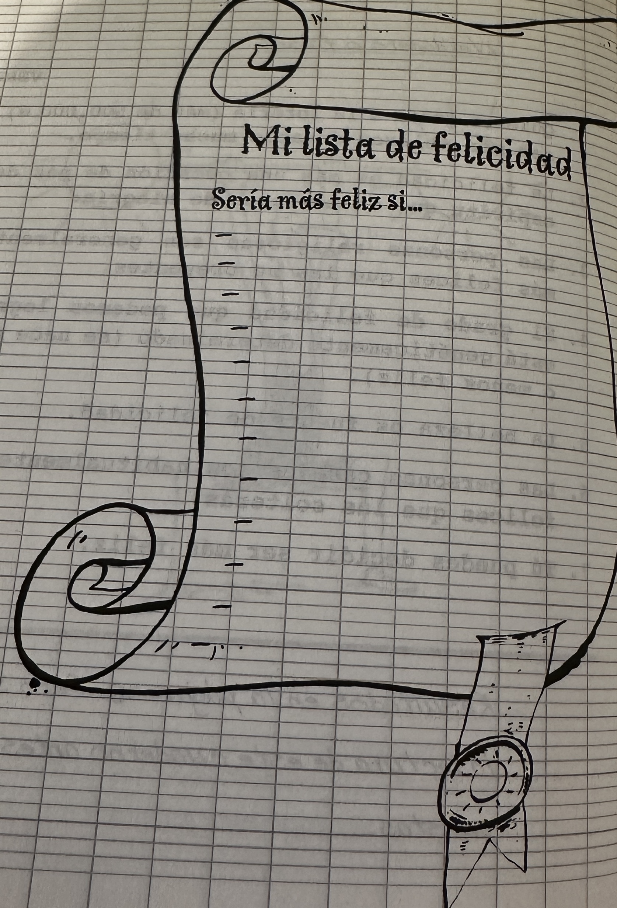
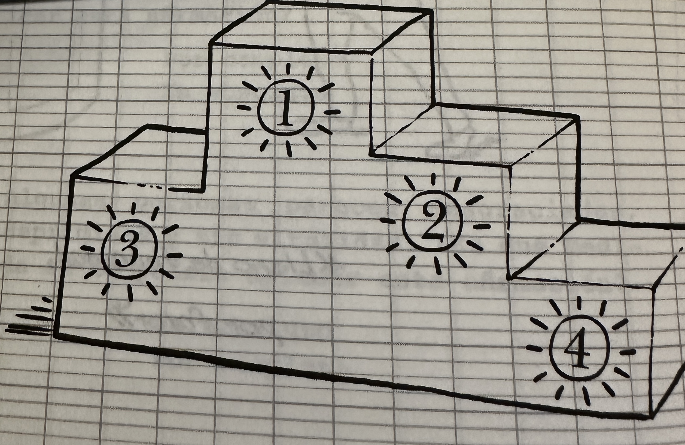

Palabras para crecer - Cuaderno de ejercicios
Aprender a ser feliz
Primera sesión: La felicidad no es algo que podamos encontrar por ahí, sino algo que se construye...y se practica
Comenzamos viendo el siguiente vídeo: La perfecta alegria
Tras esto, realizamos una lluvia de ideas, comentando esta frase y el vídeo. (5 minutos)
Lectura de la página 4 y se realiza el test de preguntas Verdadero-Falso, que aparece a continuación (10 minutos) Se comentan los resultados, (aquellos que quieran), comparando los resultados.(15 minutos)
Propuesta de nuestra lista de la felicidad. (15 minutos)

Lectura: Un poco de teoría (pág. 7-10) Comentario. (10 minutos)
Canción: Felicidad Cantamos (Puede ser como un karaoke)
¿Verdadero o Falso?
¡Antes de empezar, compruébale tus conocimientos de Felicidad!
¿Verdadero o Falso?
Retroalimentación
Falso
Los estudios sobre las personas que ganan mucho dinero en la lotería demuestran que, pasado el momento de euforia, ya no se sienten más felices. Un año después, el beneficio en términos de felicidad generalmente ha desaparecido.
Retroalimentación
Falso
Los dos son parte integrante de la felicidad, como dos caras de una realidad idéntica.
Retroalimentación
Verdadero
Las personas que tienen una vida espiritual se consideran en general más felices que las no creyentes. La pertenencia a una religión oficial no juega, por el contrario, un papel determinante.
Retroalimentación
Verdadero
La tendencia a experimentar emociones gratas es una cuestión de temperamento. Se habla de lotería genética. Pero, en todo caso, podemos modular estas predisposiciones.
Retroalimentación
Falso
Las personas que recurren a la cirugía estética no se consideran más felices tiempo después de la operación, excepto las aquejadas por graves deformidades.
Retroalimentación
Verdadero
La vida en pareja, siempre que haya respeto mutuo e intimidad (intercambios gratificantes: sexualidad, proyectos comunes,...), acrecienta la felicidad. Esta ventaja puede sin embargo desaparecer con la llegada de los niños.
Retroalimentación
Verdadero
La felicidad puede construirse. No depende sólo de nuestros esfuerzos, pero sí de muchos de nuestros esfuerzos (los científicos que estudian la felicidad lo calculan en un 40%).
Segunda sesión: Es feliz quien nada retiene para sí
"Es feliz quien nada retiene para sí", (S. Francisco de Asís)
Comentamos que nos evoca este dicho.
El termómetro de la felicidad
Se realiza el test. (Cinco minutos) Compartimos: A la vista de mis respuestas, ¿podría ser más feliz? ¿Qué tendría que hacer para serlo?(20 minutos)
Mi podio personal de felicidad: pág. 14. (10 minutos)
Lectura: pág. 15-16. (5 minutos)
Cuadro: pág. 16 (15 minutos) Compartimos los resultados.
Final: Canción- Felicidad
El termómetro de la felicidad
Solución
Solución
Solución
Solución
El podio de la felicidad
Construye tu podio personal de tipos de felicidad ordenando las frases siguientes del 1 al 4.
- Vivir momentos de alegría intensa: entrega de un diploma, boda, nacimiento de un hijo, fiestas,...
- Tener paz de espíritu, pase lo que pase.
- Estar contento por lo que se tiene y por lo que se vive.
- Hacer cosas que le gusten a uno.

Más difícil todavía: Escribimos en el podio el nombre de personas con quienes tienes o podrías tener una relación competitiva o difícil.
¿Sabes lo que es CNV? (Comunicación No Violenta)
La CNV es por excelencia ecológica, porque ayuda a transformar la energía CONTRA en una energía PARA. En efecto, criticar, chismorrear, refunfuñar o explotar despilfarra una energía considerable y es poco productivo.
Tercera sesión: Desea que cuanto sucede, suceda conforme sucede y serás feliz
Profesor de felicidad
Pensamos en personas felices. Compartimos en el grupo. Realizamos la primera parte de la tarea de la página 29: Anotar los comportamientos de las personas felices que hemos escogido. (15 minutos)
Lectura de la página 17-23: (15 minutos)Reflexión: ¿puedo liberarme de algo para alcanzar felicidad? (10 minutos)
Lista de nuestras felicidades: Página 24. Compartimos. (15 minutos)
Canción: Felicidad
Mandala
Coloreamos el mandala, impregnándonos de su texto de sabiduría:
"Tomo conciencia de que soy yo quien tiene poder sobre mi actitud. Los otros no tienen nada que ver, no son responsables de lo que me sucede".
Cuarta sesión: Eudaimonismo
Lecciones de felicidad
La felicidad no es el final del camino, ¡sino estar en camino!.
Se realiza la lectura de la teoría de las lecciones: págs. 33, 37, 39, 42, 46, 49, 50 y 52. (10 minutos)
Entre todos, se expone y decide cuáles son las cinco lecciones de felicidad más valiosas. (20 minutos)
Se deja cinco minutos para que, individualmente, se realice la lección de vocabulario (pág. 34). Se comparten todas las palabras por los miembros del grupo. (10 minutos)
Realizamos la lista de personas a las que voy a expresar mi gratitud. (pág. 41) (10 minutos)
¿La oración es un medio para ser feliz o hacer felices a los demás? Comentamos la letra de la siguiente canción de Coldplay
Terminamos todos juntos recitando:
Canción: He decidido ser feliz
Mandala
Coloreamos el mandala, impregnándonos de su texto de sabiduría:
"Tomo conciencia de que soy yo quien tiene poder sobre mi actitud. Los otros no tienen nada que ver, no son responsables de lo que me sucede"
Obra publicada con Licencia Creative Commons Reconocimiento Compartir igual 4.0